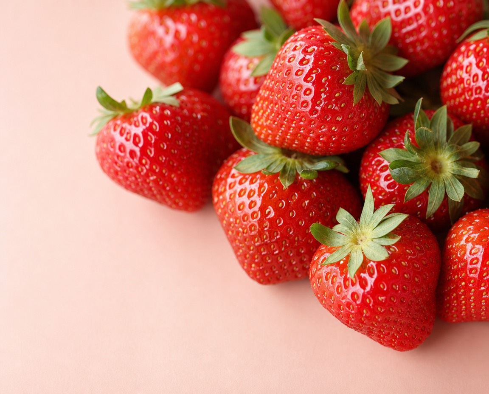
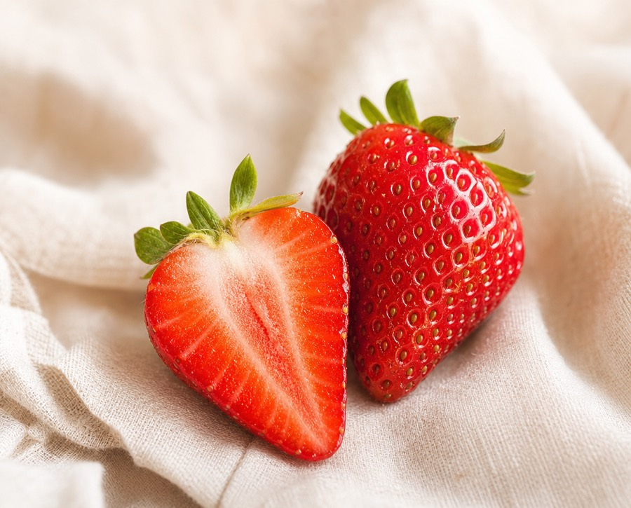
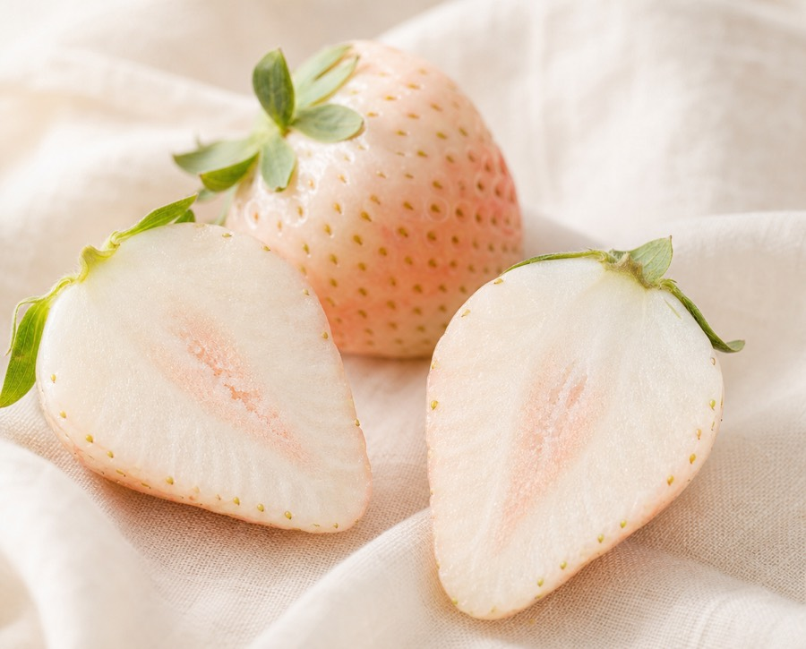
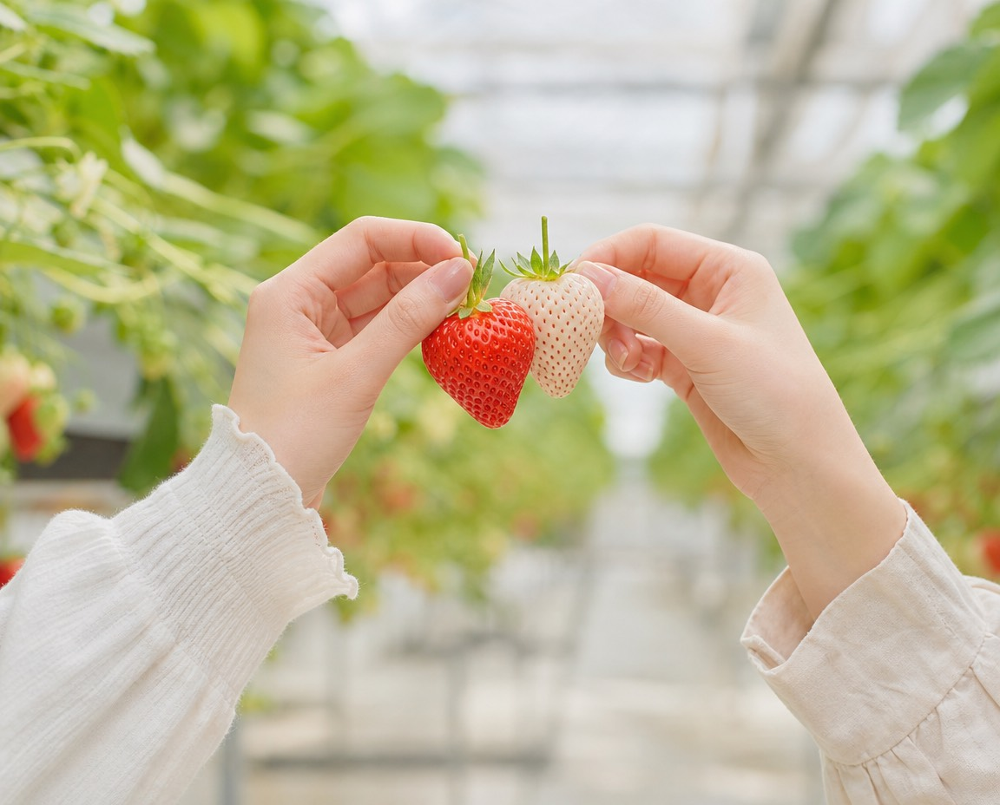
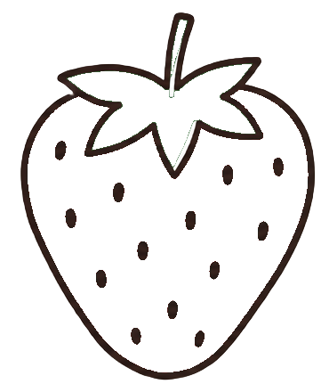
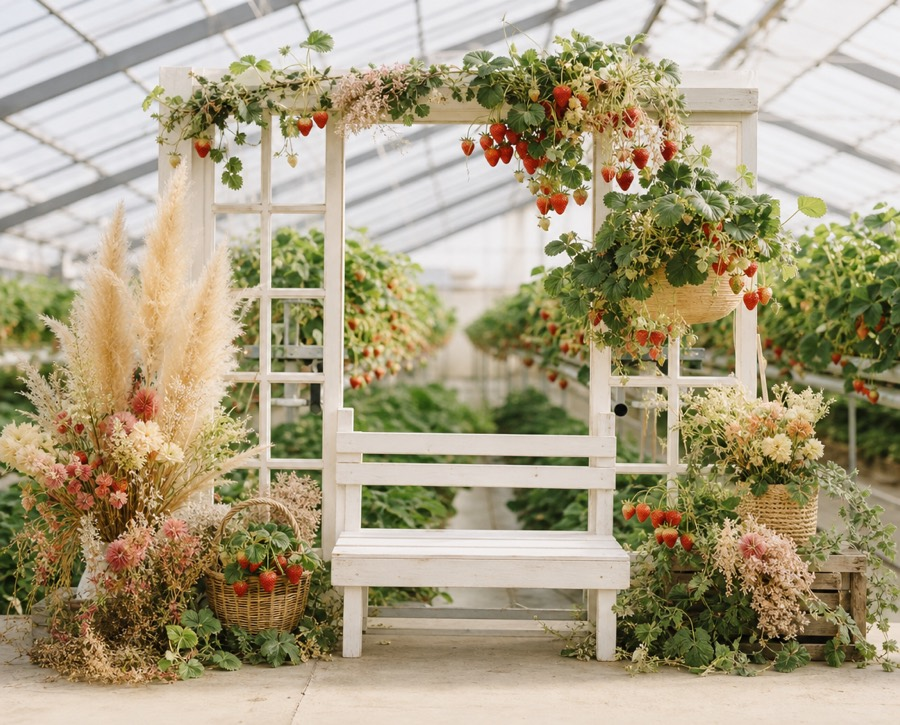
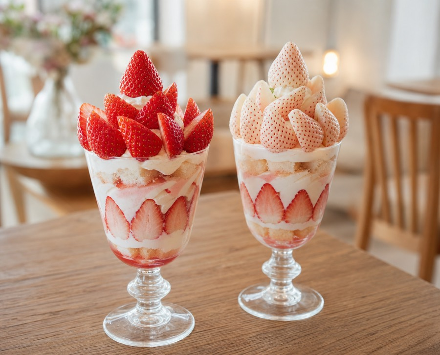
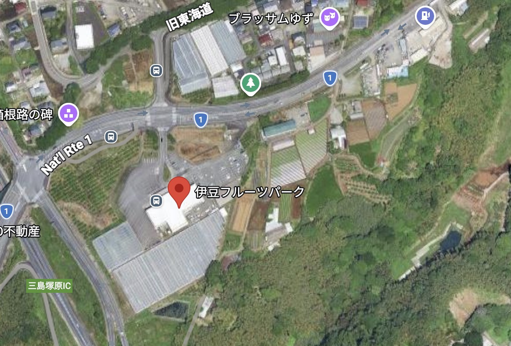

紅派？ 白派？ 決着は、いちご畑で。

紅派はこっち→ 甘酸っぱい・紅ほっぺ紅ほっぺと淡雪、どっちも食べ放題。
春休み限定 3/1~4/30
学生2名以上 2,200円LINEで日付と人数を送るだけ
２つのいちご

甘酸っぱいは 正義
紅ほっぺ/甘酸っぱい派
- 甘味と酸味のバランス
- 果肉まで赤い
- 旬は3~4月

白いのに、ちゃんと 甘い
淡雪/やさしい甘さ派
- 酸味が少なく、甘さが際立つ
- 淡いピンクのかわいい見た目
- 1日10組の数量限定
楽しみ方3つ
-
食べ比べ
紅も白も食べ放題。
友達と交換して、どっち派か決めよう。

-
写真スポット
ハウス内に撮影スポットを用意。
春休みの思い出を写真に。
-
限定スイーツ
併設カフェで、紅派・白派。
それぞれの限定スイーツを。
料金・期間
| 月 | 火 | 水 | 木 | 金 | 土 | 日 |
|---|---|---|---|---|---|---|
| 空き状況は、LINEでお問い合わせください。 | ||||||
- 空きあり
- 残りわずか
- 満席
- 一般
- 2,500 円
- 学生（2名以上）
- 2,200 円
- 期間
- 3/1~4/30
- 時間
- 10:00~16:00・食べ放題30分
※淡雪は1日10組の数量限定
アクセス

※ベリーの丘ファームは架空の農園です。地図・住所はイメージです。
- 住所
- 静岡県三島市塚原新田181-1
- 営業時間
- 10:00~16:00
-
〇〇駅から無料送迎バスあり（30分間隔で運行）
-
東名沼津IC・新東名長泉沼津から伊豆縦貫道で下田・三島方面へ約10分
よくあるご質問
汚れてもいい服装がいい？
イチゴの果汁がつくことがあるので、白い服は避けるのがおすすめ。
おしぼりは用意しています。
雨の日でも大丈夫？
いちご狩りはハウスの中なので、雨の日でも濡れずに楽しめます。
何人から予約できる？
1名から予約できます。学生料金は2名以上でのご利用が対象です。
淡雪が売り切れていたら？
紅ほっぺの食べ放題をお楽しみいただけます。淡雪は1日10組限定なので、確実に食べたい方はお早めにご予約ください。
写真撮影は可能？
はい。ハウス内の撮影スポットをはじめ、自由に撮影できます。
紅派も、白派も。
いちご畑で待っています。
淡雪は数量限定・お早めに